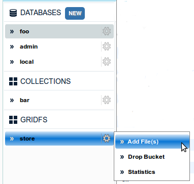
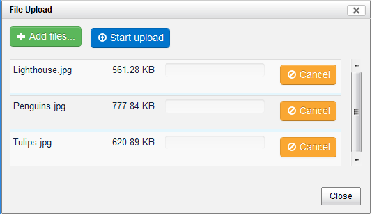
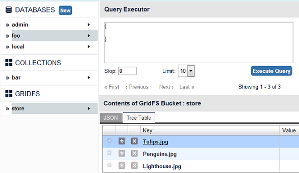

You can add new file(s) to a bucket by clicking on Add File(s) in the menu that appears when you hover over the GridFS Bucket name.
In the file upload dialog that appears, click Add Files to select the files to be uploaded and then click on Start Upload.
You can cancel a specific file before starting upload, by clicking Cancel. You can even remove a specific file after uploading by clicking Delete.
You can view the files in a GridFS Bucket by clicking on the Bucket Name
You can open a file directly in the browser, by clicking the file name in Tree Table view or Open button in JSON view.
You can download a file by clicking on download button in JSON view or clicking
 icon in Tree Table view.
icon in Tree Table view.
You can delete a file by clicking on delete button in JSON view or clicking
 icon in Tree Table view.
icon in Tree Table view.